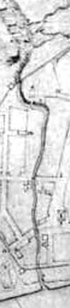

|
 The "Ruttenkill" is a traditional term referring to one of the three major streams that flowed through colonial Albany and emptied into the Hudson River. The Ruttenkill rises above today's Lark Street as several feeders flow together. It was a small stream - swelled by rains and spring runoff. It runs from west to east and between Hudson and State Streets. Above South Pearl Street, the Ruttenkill created a deeply eroded ravine that inhibited development of that part of the city until the nineteenth century. On the eastern end, its banks were features of many early property lines. Historic maps show bridges over the stream as it ran across Pearl and Court Streets. It emptied into the Hudson just south of the foot of State Street. The course of the Ruttenkill is referenced on most early Albany maps. It is shown quite clearly on the first of the city maps produced during the 1790s by Simeon De Witt. After 1820, it was piped and fill deposited on top of the pipes. Joel Munsell later noted that it flowed under today's Norton Street as the stream crossed it near the first Presbyterian church.Today, the stream is entirely underground running under many modern buildings and the Empire State Plaza. In recent years, redevelopment of downtown Albany caused survey archeology to be undertaken along the course of the lower Ruttenkill.
We are considering a number of possible origins and meanings for the term "Ruttenkill!" From north to south, these westflowing streams were the Vossenkill (Foxes Creek), the Ruttenkill, and the Beaverkill. The best historical description of these streams is found in Amasa J. Parker, Landmarks of Albany County (Syracuse, 1897), part 1:282-83. posted: 7/29/01
|
{kind=link}